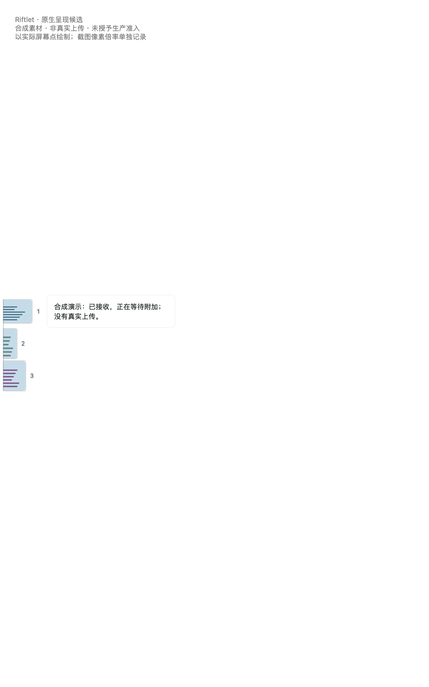
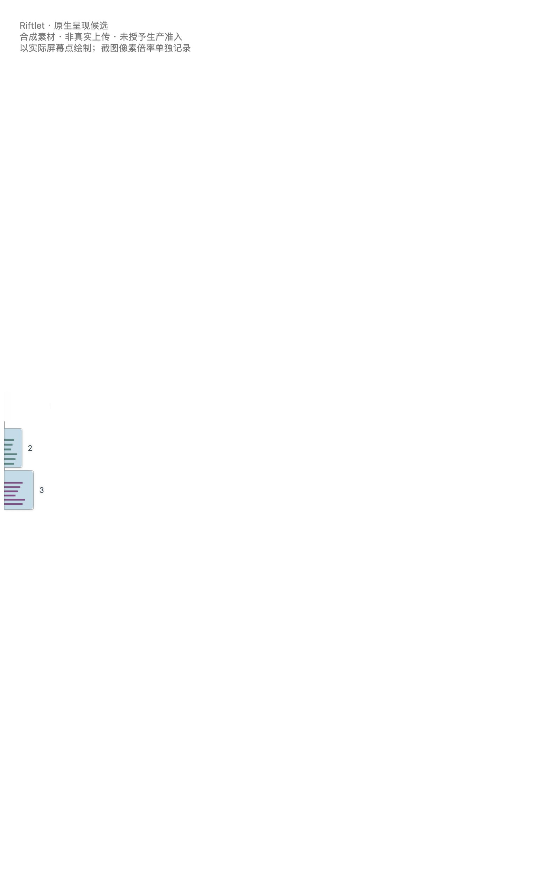
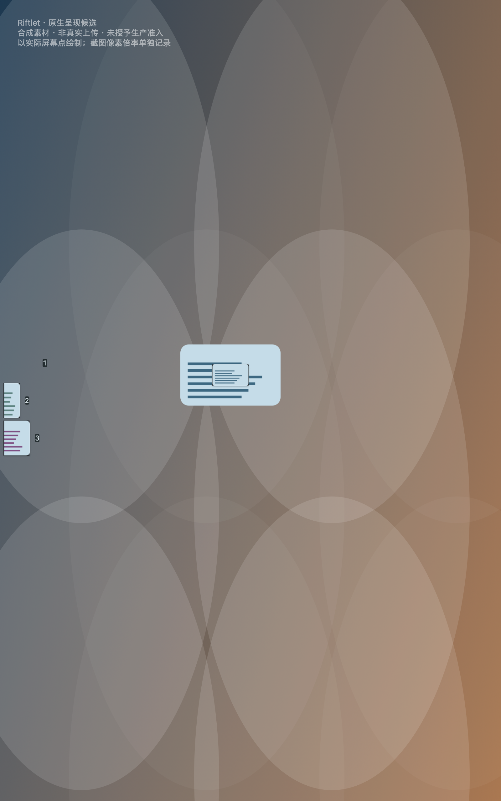

Riftlet · 原生视觉补充既有基线 · 44 张图 / 3 段录像
微图到达与收起
同一份 main 源码在两个自有合成场景中驱动原生窗口。可播放录像，也可点开静帧按原始尺寸观察。页面下方另列正式 App 收录系统窗口截图的结果。
浅色背景 · 首项收起
三张微图排在左侧。测试注入开始接收状态后，首项收起，其余两张继续显示。




深色图案 · 磁吸到达
合成截图从画面中央移向左侧微图位置。原生动画回调记录的本次磁吸区间约为 551 毫秒。



两段录像均取自 WindowServer 的自有窗口合成，背景为测试图案。录制采样间隔可变。真实系统壁纸、硬件输入、应用帧率和 ChatGPT 附件接收均不在这两段录像的测量范围内。
两张系统窗口截图的实际收录
正式 main 的 0.3.1 (4) ARM64 App 在隔离模式打开自己的两页引导。macOS 分别截取指定窗口，测试确认截图资格标记，原生收录后两份私有媒体均与对应原图逐字节一致。
| 来源 | 像素 | 原 PNG 的 SHA-256 |
|---|---|---|
| 引导第一页 | 1304 × 1216 | 92e8117d7aea656be004f74cda2c190d10a3d60487e97c0e5a111f1acb39825d |
| 引导第二页 | 1304 × 1216 | f1406ffa79f076e9f4a753817799b0636634f4313577657f6902d91fa976cccd |
软件左键命中自有微图后，两张仍显示可附加。隔离库记录 2 个资产、0 个 operation、0 个 START。这次没有可用浏览器目标，真实 ChatGPT 附加验收状态为 REAL_ACCEPTANCE_NOT_RUN。
系统原图保存在私有证据中，公开页仅列散列和尺寸。两段 MOV 和四张合成场景 PNG 保留原始字节。